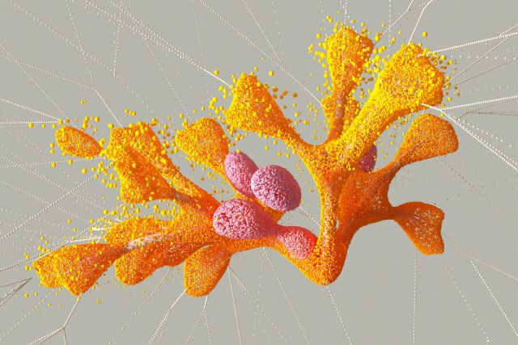

📝 Articles & Guides
Explore my writings on Data Science, Machine Learning, and Artificial Intelligence.
From Raw Logs to Business KPIs: Building a Reliable ML Analytics Layer
Physical systems deployed over edge (like camera sensors) continuously produce low-level event logs. For an example: `{"event": "person_detected", "conf": 0.91}`
Read ArticleUnderstanding Convolutional Neural Networks
A simple explanation of CNNs and how I used them in my Fruit Image Classification project.
Read Article
AI Cold War 2.0: Progress, Peril, and Paradoxes
How artificial intelligence evolved from science fiction to a global driver of innovation and power.
Read Article